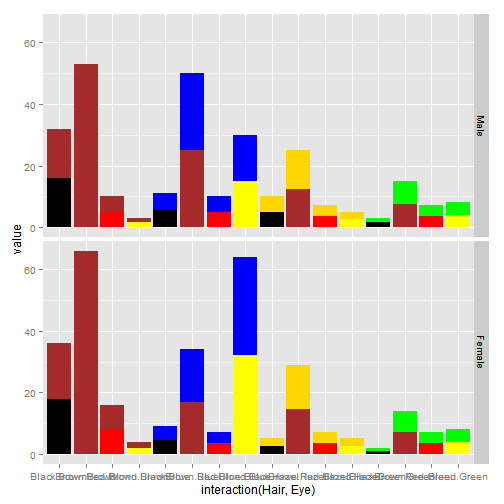

- About Hair-Eye Color Mix App
- About the Hair-Eye Dataset
- Two main parts of any Shiny App
- Where can you learn all about these cool stuff
Elly Alam
Data Science Student
This App is part of the assignment for "Developing Data Products" course
The app is developed using "Shiny" package in R.
The app works based on HairEyeColor dataset in R packages
The app consisits of 2 "Shiny"" files (ui.R and server.R) and 2 function files
The app explores the distribution of poeple's Hair-Eye color mixture
The app URL link is Here
The dataset is a 3-dimensional array resulting from cross-tabulating 592 observations on 3 variables.
The variables and their levels are as follows:
| No | Name | Levels |
|---|---|---|
| 1 | Hair | Black, Brown, Red, Blond |
| 2 | Eye | Brown, Blue, Hazel, Green |
| 3 | Sex | Male, Female |

ui.r file:
Some User Interface widgets:
server.r file:
you can learn about all "Data Products" such as:
Shiny Apps
Rmarkdown Reproducable Reports
Slidify Presentations
Rstudio Presenter
RCharts
and a lot more in:
"Data Science Specialization" offered by "coursera.org"